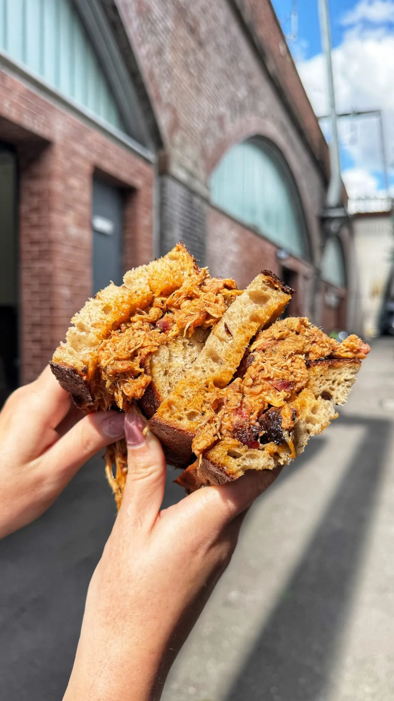
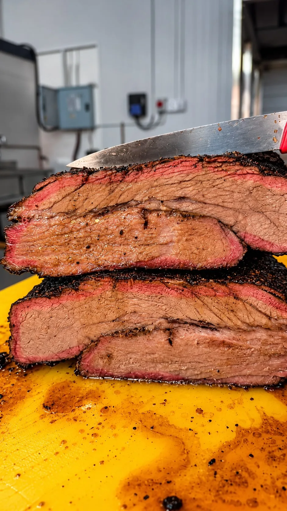
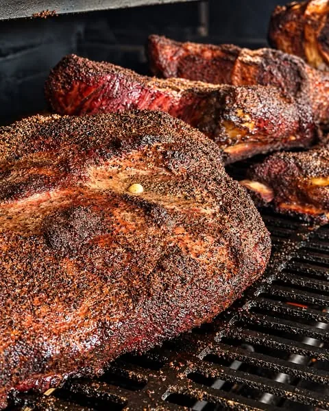

CASTLEFIELD, MANCHESTER
GOOD BBQ.
NO SHORTCUTS.
Slow-smoked meat, big sandwiches and a proper appetite. Find Sandy's beneath the railway arches.
ARCH 121 · WOOLLAM PLACESMOKED SLOW. SERVED FRESH.

01 / FROM THE SMOKER
THIS IS WHAT
THIS IS WHAT
YOU CAME FOR.
Real fire. A long cook. That first bite. Here's a look at Sandy's BBQ — not a fixed menu or a promise of what's available today.


LOW & SLOW / MANCHESTER
Made for the
first bite.
Sandwiches, smoked cuts and sides depend on the day's cook. Follow Sandy's for the latest menu and sell-out updates.
See what’s on today02 / BEHIND THE SMOKE
MEET
ANGELA.
Angela is the smoker at the centre of Sandy's. The meat goes in, the hours go by, and the fire does the heavy lifting.
THE METHOD LOW & SLOWTHE HOME CASTLEFIELD'S ARCHES
Come find the shed
03 / COME HUNGRY
FIND US
FIND US
UNDER THE ARCH.
WHERE TO FIND SANDY'S
Sandy's Smokeshed
Arch 121, Woollam Place
Castlefield, Manchester
M3 4JJ, United Kingdom Open directions
Arch 121, Woollam Place
Castlefield, Manchester
M3 4JJ, United Kingdom Open directions
BEFORE YOU SET OFF
Opening times and what's available can change. Check Sandy's latest posts for the day's food and service updates.
@sandysmokeshed